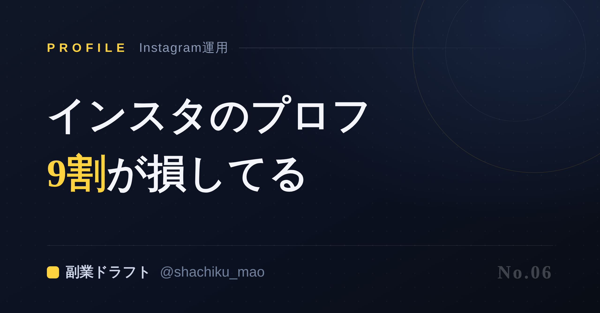
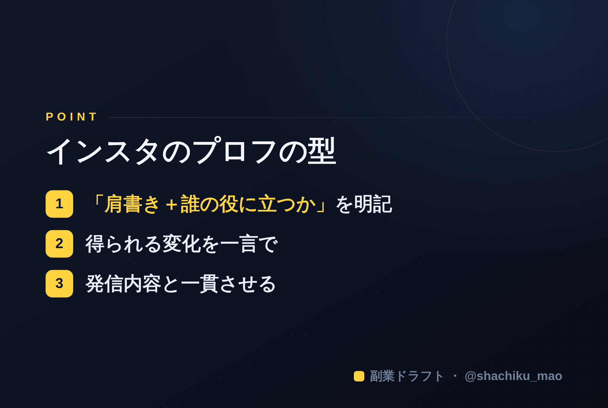

使い方
1. 「タイトルをコピー」→ note のタイトル欄に貼る
2. オレンジのラベルの画像（見出し画像）を note の見出し画像に設定
3. 「本文1をコピー」→ note本文に貼る
4. 青いラベルの位置（本文の途中）に、同じ名前の画像をアップして挿入
5. 「本文2をコピー」→ 続きを貼る
※ 見出しが普通の文字になったら、その行を選んで「大見出し」に設定してください
1. 「タイトルをコピー」→ note のタイトル欄に貼る
2. オレンジのラベルの画像（見出し画像）を note の見出し画像に設定
3. 「本文1をコピー」→ note本文に貼る
4. 青いラベルの位置（本文の途中）に、同じ名前の画像をアップして挿入
5. 「本文2をコピー」→ 続きを貼る
※ 見出しが普通の文字になったら、その行を選んで「大見出し」に設定してください
Instagramのプロフィールで9割が損してる。直すだけで変わる
見出し画像に設定：note-06.png

投稿は頑張っているのに、なぜかフォロワーが増えない。 その原因、プロフィール文にあるかもしれません。
Instagramでは、投稿を見て興味を持った人が、フォローするか決める場所がプロフィール。つまりプロフィールは"最後の関門"です。ここで9割の人が、無意識に損をしています。
よくある「損してる」プロフィール
- 「日々の暮らしを発信🌷」→ 何の人か分からない
- 「30代/2児の母/ゆるく発信中」→ 属性だけで、価値が伝わらない
- 情報を詰め込みすぎて、結局印象に残らない
これらに共通するのは、「この人をフォローする理由」が書かれていないこと。プロフィールは自己紹介ではなく、"あなたをフォローすると何が得られるか"を伝える場所なのです。
変わるプロフィールの型
次の3要素を、この順で入れるだけで見違えます。
① 何者か（肩書き） 例：元美容部員／現役の経理／2度の転職を経験
② 誰の何を解決するか 例：コスメ迷子さんへ、肌質に合う選び方を発信
③ フォローするメリット or 導線 例：無料の肌質診断リストはハイライトから
改行と絵文字で"見やすく"するのもポイント。スマホでパッと読めるかを意識します。
プロフィールは「一貫性」も大事
Threads、X、Instagram、note——媒体ごとにバラバラの肩書きだと、信頼が分散します。同じ人物像で貫くことで、どこで出会っても「あの人だ」と覚えてもらえます。
本文中に挿入：note-06-body.png（この記事のポイント）

各SNSのプロフィール文を、一貫した人物像で一括生成できるのが 「副業ドラフト」 です。あなたの強みから、Threads/X/Instagram/note用のプロフィールを一気に作ります。無料で試せます。
👉 https://note-threadssf.onrender.com
投稿を変える前に、まずプロフィール。伸びの土台はここです。